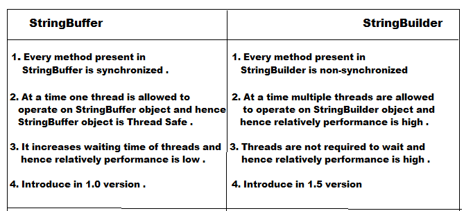

java.lang.StringBuilder:-
- It is exactly same as StringBuffer including constructors and methods except following difference .

String vs StringBuffer vs StringBuilder
- If the content is fixed and won't change frequently then we should go for String
- If the content is not fixed and keep on changing and thread safety is required , then we should go for StringBuffer .
- If the content is not fixed and keep on changing and thread safety is not required then we should go for StringBuilder .
Method chaining
- For most of methods in String, StringBuffer, StringBuilder return types are same type only .
- Hence after applying a method call on the result we can call another method which forms method chaining .
- In method chaining, all method calls will be performed from left to right .